FIDELITY-RESEARCH（フィデリティ・リサーチ）
1963年に池田 勇氏が設立したカートリッジ・トーンアームのブランド。池田氏はかつてグレースに勤務し、F-8シリーズの前身のF-7シリーズを手がけたようだ。MC型カートリッジでは鉄芯を排除した空芯型カートリッジで有名。またブランド後半には重量級のカートリッジ・トーンアームの製品も多かった。後に池田 勇氏が立ち上げたのがマニアの間で有名な「イケダ」ブランドである。フィデリティ・リサーチ自身は最終的に1980年代末に消滅した模様。フィデリティ・リサーチ製品のメンテの一部は現在イケダ・サウンド･ラボズが行っている。
�T.カートリッジ
1.MC型
�@FR-1系列
鉄芯を排除した空芯型MCカートリッジの代表的機種。初代からMK3までが併売されていたが、初代モデルが一番音が良かったとの意見も見かける。
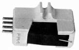
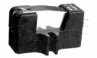
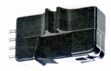
�AFR-7系列
シェル一体型MCカートリッジ。発電系はそのままに、形状・コネクターをSPU-AタイプやEMTタイプにしたモデルも存在した。
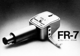
�BFR-2系
後の「イケダ」のデザインの源流を感じさせるMCカートリッジ。発電効率を高めプリメインアンプ内蔵のヘッドアンプでの使用に備え、またトラッキングアビリィテーの向上で各種アームへの適応性を高めたシリーズ。
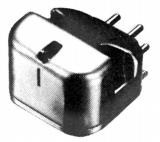
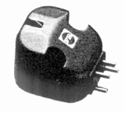
(PMC-3)�CＭＣＸ系
このブランド最後のカートリッジ・シリーズ。
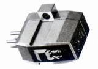
(MCX-3)
2.MM型
�@FR-5系列
トランスFRT-3のトロイダル・コアの技術を生かしたMM型。
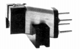
�AFR-6系列
1970年代前半に登場したMM型の上位機種。
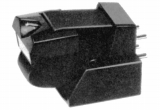
�BFR-101系列
1970年代後半に登場したMM型の下位機種。
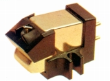
�U.昇圧トランス
当サイトに収録するのはFRT-3からである。前作FTR-2はトランジスターヘッドアンプだったようだ。雑音、ハイレベルでの歪みを嫌い、昇圧トランスへ転向したと当時の記録にある。同社のトランスの特長は、自社内でトロイダル巻を施したリングコアを使用していること。
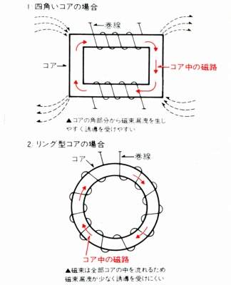
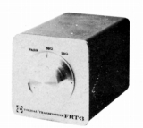 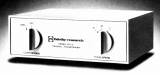
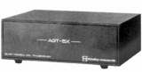
(AGT-5X)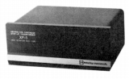
( XF-1 TypeL)XF-1 TypeH XF-1 TypeM XF-1 TypeL XF-2H XF-2L
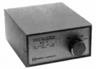
(XG-7)
�V.アーム
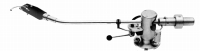
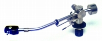
FR-64 FR-64S FR-64fx FR-64fxPro FR-66 FR-66S FR-66fx
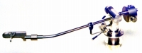
(FR-14)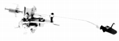
(FR-64fxMK2)�W.その他
1.ヘッドシェル
アームに熱心なメーカーだけに、シェルはかなり豊富。
2.その他
カートリッジケース2点、カートリッジ取付用小物パック1点、リードワイヤー1点。